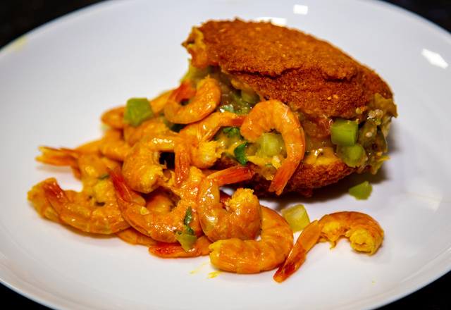
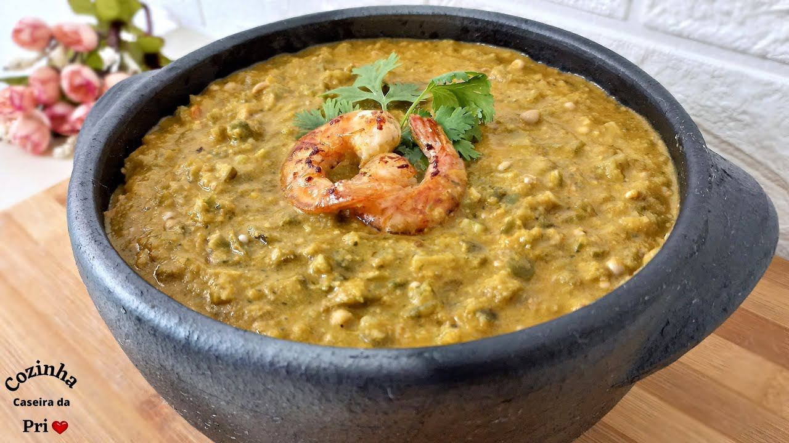
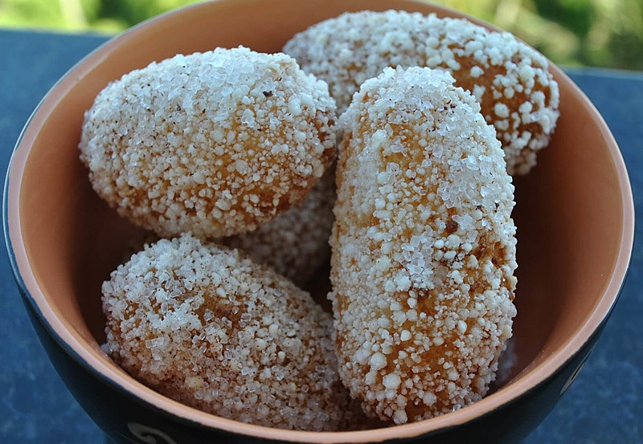
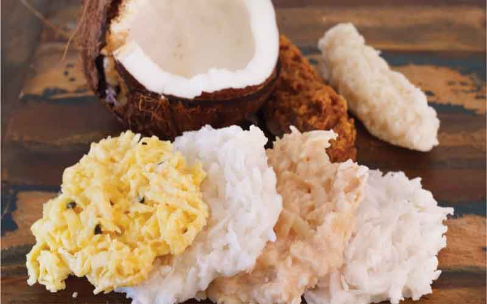

O modo de preparo do acarajé é trabalhoso, pois a massa requer um processo específico de limpeza e aeração do feijão fradinho.
OBS:Vatapá, Caruru, Camarão seco refogado e Vinagrete (receitas separadas).
Demolhar: Deixe o feijão fradinho de molho em água por, no mínimo, 6 a 8 horas, ou de um dia para o outro.
Descascar: Após o remolho, a casca do feijão deve ser retirada. Esfregue os grãos com as mãos ou use um processador com um pouco de água para soltar as peles. Troque a água várias vezes, descartando as peles que boiam, até que todos os grãos estejam limpos e sem a casca (e sem o "olhinho" preto, se possível).
2. Preparar a Massa
Triturar: Escorra bem o feijão limpo. Triture os grãos em um processador ou liquidificador com a cebola ralada e o sal. Adicione um pouquinho de água se necessário para ajudar a bater, mas a massa deve ficar densa, não líquida.
Bater (Aerar): Transfira a massa para uma tigela grande. Este é o passo crucial: bata a massa vigorosamente com uma colher de pau (tradicionalmente usando as costas da colher) de baixo para cima, incorporando ar. Bata por cerca de 15 a 20 minutos, até que a massa dobre de volume e fique esbranquiçada e bem fofinha
.
3. Fritar os Bolinhos
Aquecer o Azeite: Em uma panela funda (ou tacho), aqueça bastante azeite de dendê para fritura por imersão. Uma dica tradicional é colocar meia cebola com casca no azeite quente; quando ela começar a chiar, o azeite está na temperatura ideal.
Modelar e Fritar: Com o auxílio de duas colheres de sopa,modele os bolinhos de massa, passando as colheres em água ou no próprio azeite quente para evitar
que a massa grude. Mergulhe os bolinhos no azeite quente.
Dourar: Frite até que fiquem dourados por igual, virando-os se necessário.
Escorrer: Retire os acarajés fritos e coloque-os sobre papel absorvente para escorrer o excesso de óleo.
4. Servir
Corte o bolinho ao meio (sem separar as partes), recheie com vatapá, caruru, camarões secos e vinagrete. A pimenta (molho) é opcional e servida à parte.
O vatapá é um creme espesso e saboroso, um dos pilares da culinária baiana, com raízes africanas. É feito tradicionalmente com pão dormido ou farinha de trigo como base para engrossar, e temperado com ingredientes marcantes como azeite de dendê, leite de coco e frutos do mar.
Hidratar a Base: Rasgue os pães amanhecidos em pedaços e coloque-os de molho em uma mistura de leite de coco e água por cerca de 10 minutos, até amolecerem bem.
Triturar o Fundo Misto: Em um liquidificador ou processador, triture o amendoim, a castanha de caju e o camarão seco até formar uma farofa grossa. Adicione um pouco de água ou leite de coco para ajudar a bater, se necessário.
Bater a Base: Adicione a mistura de pão hidratado, os temperos (cebola, alho, tomate, pimentão, coentro, gengibre) e a farofa de amendoim, castanha e camarão ao liquidificador. Bata tudo até obter um creme homogêneo e liso.
Cozinhar o Creme: Despeje o creme batido em uma panela funda. Leve ao fogo médio, mexendo sempre para não empelotar ou grudar no fundo.
Adicionar o Dendê: Quando o creme começar a engrossar, adicione o azeite de dendê aos poucos, mexendo até atingir a consistência desejada e o sabor se harmonizar (cerca de 10-20 minutos). O azeite de dendê é adicionado a gosto, e a quantidade pode variar.
Ajustes: Prove e ajuste o sal, se necessário (o camarão seco já adiciona sal).
Servir: O vatapá está pronto para ser servido quente, seja como acompanhamento para o acarajé, com arroz branco ou como recheio de moquecas.
Preparar o Camarão Seco: Lave bem o camarão seco para tirar o excesso de sal. Deixe de molho em água morna por uns 15 minutos e escorra. Reserve alguns camarões inteiros para finalizar e triture o restante no liquidificador ou processador até virar uma farofa grossa.
Preparar o Quiabo: Lave bem os quiabos e corte as pontas. Corte-os em rodelas finas (cerca de 0,5 cm).
Neutralizar a Baba (Opcional): Se quiser reduzir a baba do quiabo, você pode salpicá-lo com um pouco de vinagre ou limão após o corte, deixar descansar por 10 minutos e depois lavar e escorrer novamente.
Refogar os Temperos: Em uma panela grande, aqueça um fio de azeite de oliva e refogue a cebola e o alho até dourarem. Adicione o tomate e o pimentão e refogue mais um pouco até murcharem.
Cozinhar o Quiabo: Adicione o quiabo cortado à panela. Misture bem com os temperos e tampe a panela. Deixe cozinhar em fogo médio, mexendo ocasionalmente, até que o quiabo esteja macio, mas sem desmanchar completamente. O cozimento ajudará a reduzir a baba naturalmente.
Adicionar o Camarão e Dendê: Quando o quiabo estiver cozido, adicione a farofa de camarão seco triturado, os camarões inteiros reservados e o azeite de dendê. Mexa bem para incorporar todos os sabores.
Finalizar e Ajustar: Cozinhe por mais uns 5 a 10 minutos em fogo baixo, permitindo que o azeite de dendê cozinhe e o prato adquira sua cor característica. Adicione o coentro e a cebolinha picados. Prove e ajuste o sal, se necessário.
O caruru está pronto para ser servido quente, geralmente acompanhado de arroz branco, ou como parte da refeição completa com vatapá e acarajé.
OBS:Para polvilhar após a fritura:
1/2 xícara de açúcar
1 colher de sopa de canela em pó
Preparar e Hidratar a Massa
Em uma tigela grande, misture a tapioca granulada, o coco ralado, o açúcar e a pitada de sal.
Adicione a água morna (ou leite de coco morno) aos poucos, misturando bem. A quantidade de líquido pode variar ligeiramente dependendo da marca da tapioca e do coco. A massa deve ficar úmida e maleável, mas não encharcada.
Cubra a tigela com um pano de prato ou plástico filme e deixe descansar em temperatura ambiente por, no mínimo, 3 a 4 horas. O ideal é deixar de um dia para o outro para garantir que a tapioca absorva todo o líquido e a massa dê liga (fique firme para modelar).
2. Modelar os Bolinhos
Após o descanso, verifique a consistência da massa. Se estiver muito seca, adicione um pouquinho mais de água morna. Se estiver muito mole, adicione um pouco mais de tapioca granulada.
Com as mãos untadas com um pouco de óleo ou água, modele os bolinhos no formato tradicional, que é oval ou de croquete. O tamanho é a gosto, mas geralmente são pequenos ou médios.
3. Fritar
Em uma panela funda ou frigideira, aqueça bastante óleo vegetal em fogo médio-alto para fritura por imersão.
Quando o óleo estiver quente, frite os bolinhos aos poucos para que não grudem e a temperatura do óleo não baixe muito.
Frite até que fiquem bem dourados e crocantes por fora.
Retire os bolinhos com uma escumadeira e coloque-os sobre papel absorvente para escorrer o excesso de óleo.
4. Finalizar e Servir
Em um prato fundo ou tigela, misture o açúcar e a canela em pó.
Imediatamente após saírem do papel absorvente (ainda quentes), passe os bolinhos nessa mistura, cobrindo todos os lados.
Sirva os bolinhos de estudante quentes ou em temperatura ambiente.
O modo de preparo da Cocada Baiana de Maracujá geralmente resulta em uma versão cremosa, combinando a doçura do coco e do leite condensado com o azedinho da polpa da fruta.
Opcional: 1 colher de sopa de manteiga sem sal
Reduzir o Suco (Opcional, mas recomendado para mais sabor): Em uma panela pequena, leve o suco de maracujá concentrado com um pouco do açúcar (cerca de 2 colheres de sopa) ao fogo médio. Deixe reduzir até virar uma calda espessa. Reserve.
Preparar a Base da Cocada: Em uma panela média e de fundo grosso (para não queimar), misture o leite condensado, o restante do açúcar, o coco ralado e a manteiga (se estiver usando). Misture bem fora do fogo para garantir que os ingredientes se integrem por igual.
Cozinhar: Leve a panela ao fogo médio, mexendo sempre. O tempo de cozimento pode variar, mas geralmente leva de 10 a 20 minutos.
Adicionar o Maracujá: Quando a mistura começar a engrossar e a desgrudar levemente do fundo da panela, adicione a calda de maracujá reduzida e a polpa da fruta com as sementes (se estiver usando). Misture bem.
Atingir o Ponto: Continue mexendo no fogo baixo por mais alguns minutos, até que a cocada atinja o ponto desejado.
Ponto de corte (mais firme): Quando a mistura soltar completamente do fundo da panela, formando um "caminho" quando você passa a colher.
Ponto cremoso (de colher/pote): Um pouco antes de soltar totalmente do fundo.
Modelar ou Despejar:
Para cortar em pedaços: Despeje a cocada ainda quente sobre uma superfície de mármore untada com manteiga ou em uma forma forrada com papel manteiga. Espalhe uniformemente e espere esfriar completamente antes de cortar em quadrados.
Para enrolar: Deixe esfriar um pouco mais até conseguir manusear (ou bata a mistura na batedeira por alguns minutos para clarear e firmar) e modele bolinhas com as mãos untadas.
Servir: Sirva em temperatura ambiente. A cocada cremosa de maracujá é um doce delicioso e perfumado.
2-prato:Vatapa
3-prato:caruru
O modo de preparo do Caruru baiano é relativamente simples, focado no cozimento do quiabo com temperos e o azeite de dendê.
4-sobremesa:Bolinho do Estudante
O modo de preparo do bolinho de estudante é simples, mas exige tempo de descanso para que a tapioca hidrate corretamente e dê a liga necessária.
5-Sobremesa:Cocada bahiana